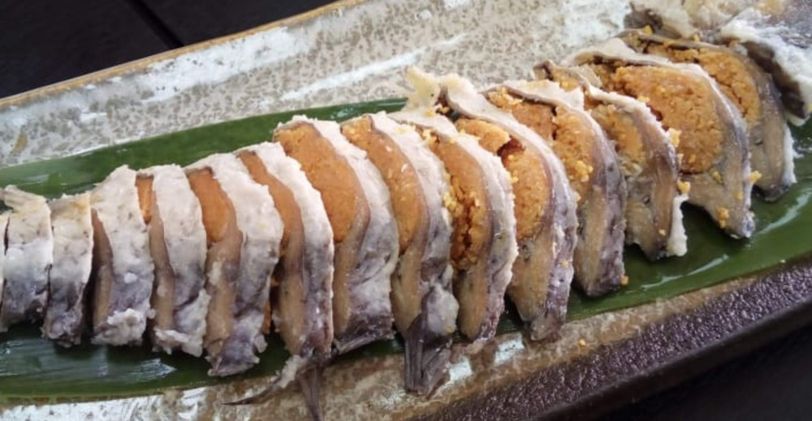

I love sushi because there is so many differenty kinds of sushi. The large variety of sushi adds to the experience because its hard to dislike something when theres so much to choose from. Sushi also has lots of health benefits because seaweed and fish are all very healthy.
I don't like sushi because I am very particular about the texture of food. Eating raw fish also feels daunting to me. Although I enjoy rainbow trout and salmon, the tecture of sushi isn't for me.
